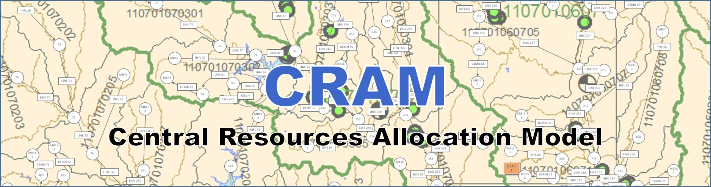

CRAM Documentation¶
CRAM is a water resources model used to support decisions for short, medium and long-range planning of a system’s raw water supply. CRAM simulates all components of a system including reservoirs, water rights, wells, diversions, exchanges and more, through an intuitive drag and drop user interface. Whether your role is decision-maker, water resources manager, planner, engineer or accountant, CRAM will provide you with a more complete understanding of your water supply and demand, as well as how to optimize the use of this limited resource. CRAM is currently used by many cities, states and agencies throughout the United States for their water resources modeling and decision-making.
More information is available at www.lynker.com/cram.